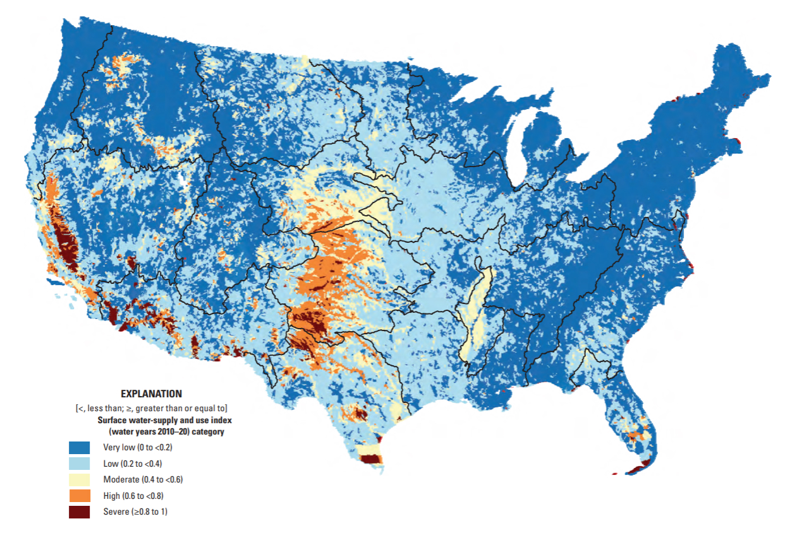
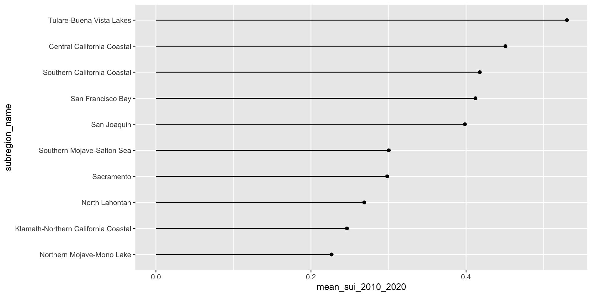
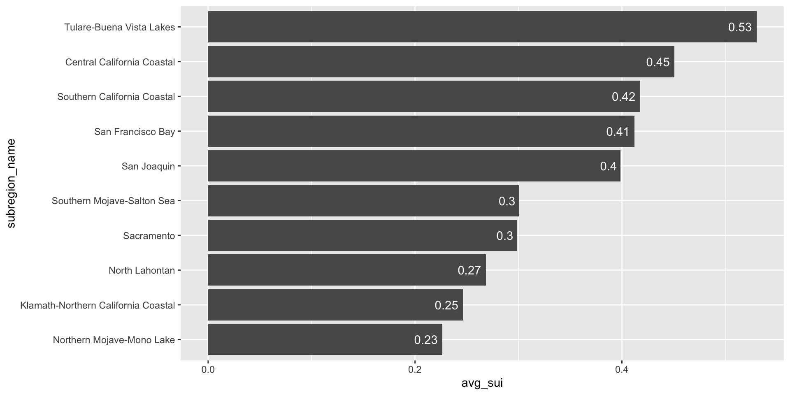
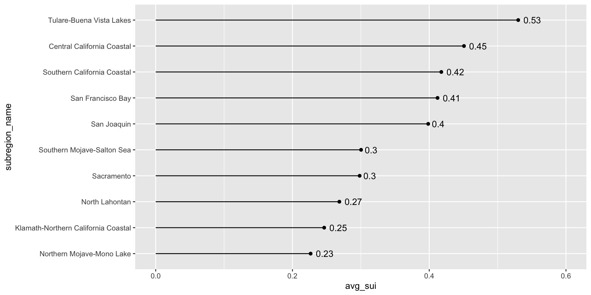
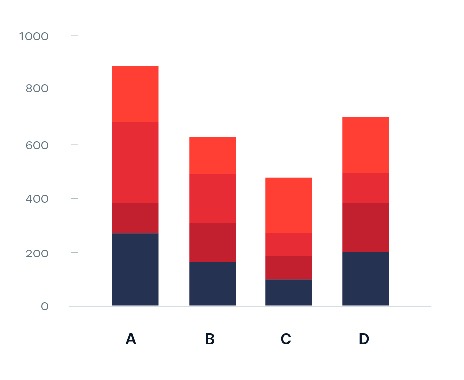
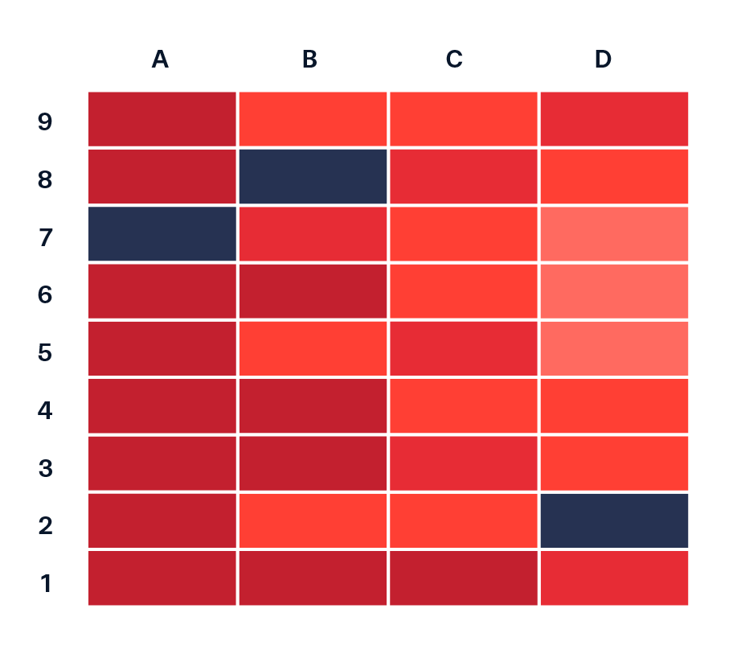
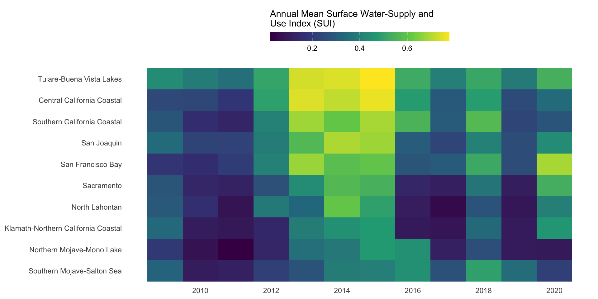
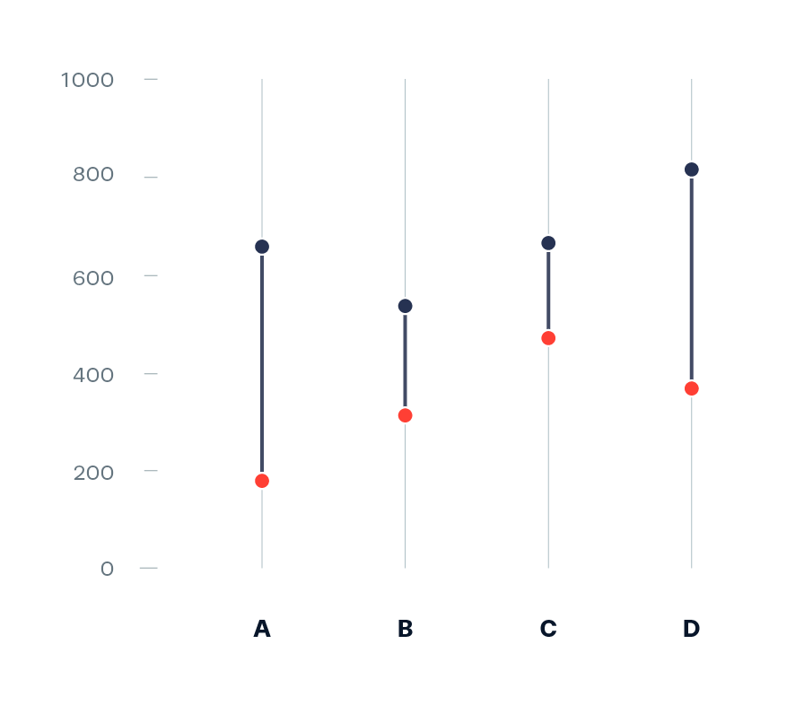
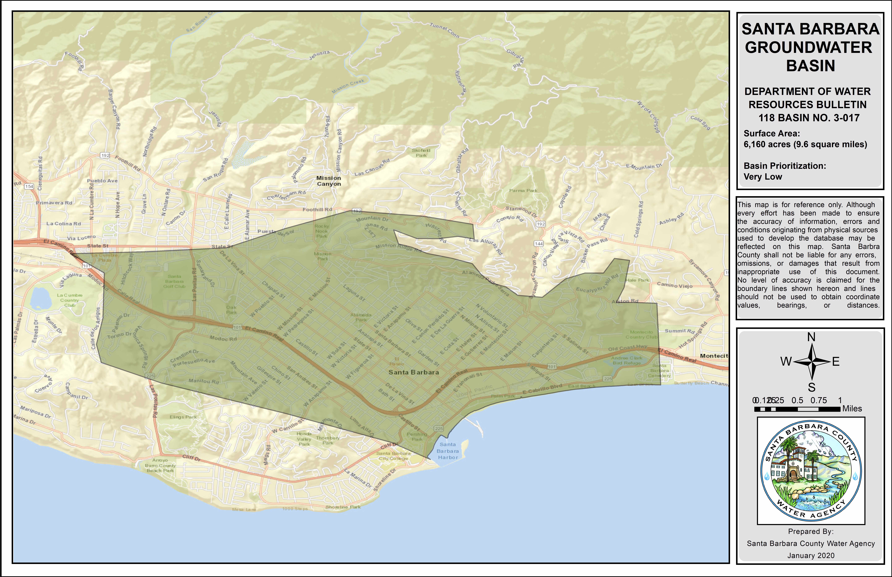
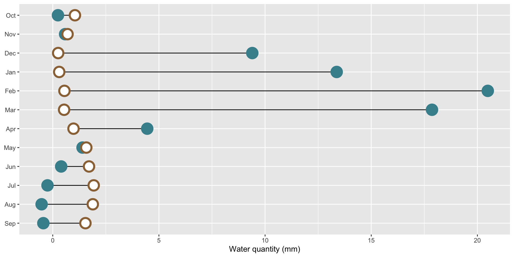

Surface water-supply and use index (SUI) by 12-digit hydrologic unit codes (HUCs) for water years 2010-2020. Source: Chapter F of the U.S. Geological Survey Integrated Water Availability Assessment—2010–20.

EDS 240: Lecture 3.1
Visualizing amounts / rankings
Week 3 | January 21st, 2026
Visualizing data amounts / rankings?
Showing the relationship between a numeric and categorical variable(s), i.e. comparing categorical groups based on their numeric values.
Roadmap
We’ll first explore two (highly interchangeable) chart types for visualizing amounts across a categorical variable (great for highlighting rank or hierarchy):
1. bar charts
2. lollipop charts (and dot plot variant)
We’ll also learn about a couple alternatives, which may be better suited for you data depending on the context, data structure, and narrative you want to tell:
3. heat maps (for when you have 2 categorical + 1 numeric variable and / or want to focus on patterns rather than precise amounts)
4. dumbbell charts (for visualizing change / difference between two groups)
The data: USGS National Water Availability Assessment
In January 2025, The U.S. Geological Survey (USGS) released its new National Water Availability Assessment (NWAA), which offers insights into water supply, demand, and quality across the U.S. The modeled water availability data that underlies the NWAA is made available through the online National Water Availability Assessment Data Companion (NWDC). Here, users can interactively subset and download data or download files containing the full spatial (conterminous US) and temporal (2010-2020) extent of the NWDC datasets.
Surface water-supply and use index (SUI) by 12-digit hydrologic unit codes (HUCs) for water years 2010-2020. Source: Chapter F of the U.S. Geological Survey Integrated Water Availability Assessment—2010–20.
The data: USGS National Water Availability Assessment
For today’s lecture, we’ll download the full, integrated dataset and filter for just the California water resource region, which is represented by the 2-digit hydrologic unit code (HUC), 18. We’ll explore water availability and use across HUC 18’s ten subregions.

(Left) Source: Hydrologic Unit Codes (HUCs) Explained; Hydrologic units are identified using 12-digit hydrologic unit codes (HUC12s), which can be parsed into shorter codes representing larger spatial units (e.g. regions, subregions, subbasins). | (Right) California region (HUC 18), with its ten 4-digit subregion hydrologic unit boundaries. Source: Wikipedia
Data wrangling
This integrated dataset includes modeled monthly estimates of available water supply, water consumption, and the Surface Water-Supply and Use Index (SUI) for hydrologic units across the conterminous US from 2010-2020.
##~~~~~~~~~~~~~~~~~~~~~~~~~~~~~~~~~~~~~~~~~~~~~~~~~~~~~~~~~~~~~~~~~~~~~~~~~~~~~~
## setup ----
##~~~~~~~~~~~~~~~~~~~~~~~~~~~~~~~~~~~~~~~~~~~~~~~~~~~~~~~~~~~~~~~~~~~~~~~~~~~~~~
#..........................load packages.........................
library(tidyverse)
library(janitor)
library(scales)
#..........................import data...........................
iwa_data <- read_csv(here::here("week3", "data", "combined_iwa-assessment-outputs-conus-2025_CONUS_200910-202009_long.csv"))
#..................create df of subregions names.................
# data only contain HUC codes; must manually join names if we want to include those in our viz (which we do! we'll mainly be looking at CA subregions)
# subregions (& others) identified in: https://water.usgs.gov/GIS/wbd_huc8.pdf
# there may be a downloadable dataset containing HUCs & names out there...but I couldn't find it
subregion_names <- tribble(
~subregion_HUC, ~subregion_name,
"1801", "Klamath-Northern California Coastal",
"1802", "Sacramento",
"1803", "Tulare-Buena Vista Lakes",
"1804", "San Joaquin",
"1805", "San Francisco Bay",
"1806", "Central California Coastal",
"1807", "Southern California Coastal",
"1808", "North Lahontan",
"1809", "Northern Mojave-Mono Lake",
"1810", "Southern Mojave-Salton Sea",
)
##~~~~~~~~~~~~~~~~~~~~~~~~~~~~~~~~~~~~~~~~~~~~~~~~~~~~~~~~~~~~~~~~~~~~~~~~~~~~~~
## wrangle data ----
##~~~~~~~~~~~~~~~~~~~~~~~~~~~~~~~~~~~~~~~~~~~~~~~~~~~~~~~~~~~~~~~~~~~~~~~~~~~~~~
#......create df with just CA water resource region (HUC 18).....
ca_region <- iwa_data |>
# make nicer column names ----
clean_names() |>
# create columns for 2-unit (region-level) & 4-unit (subregion-level) HUC using full 12-unit HUC ----
mutate(region_HUC = str_sub(string = huc12_id, start = 1, end = 2),
subregion_HUC = str_sub(string = huc12_id, start = 1, end = 4)) |>
# filter for just CA region (HUC 18) ----
filter(region_HUC == "18") |>
# separate year and month into two columns ----
separate_wider_delim(cols = year_month,
delim = "-",
names = c("year", "month")) |>
# convert year and month from chr to num ---
mutate(year = as.numeric(year),
month = as.numeric(month)) |>
# join subregion names ----
left_join(subregion_names) |>
# keep necessary columns & reorder in more logical way -----
select(year, month, huc12_id, region_HUC, subregion_HUC, subregion_name, availab_mm_mo, consum_mm_mo, sui_frac)Bar & lollipop plots to visualize rankings
Let’s first look at the long-term mean Surface Water-Supply and Use Index (SUI) across the ten HUC 18 subregions. Higher SUI values indicate greater water stress. Each bar and lollipop represents the mean SUI for a given subregion, calculated by averaging all monthly SUI values from 2010–2020.
From the USGS Glossary: “A high index value indicates that a high proportion of the average supply is either consumed by human use or unavailable because of climatic variation, leading to high water stress.”
Make space for long x-axis labels
We never want to leave overlapping or super squished text (especially axis text) on our plots. Let’s give those long x-axis labels some breathing room using by reversing your axes mappings! Alternatively, you can leave your mappings as-is and apply coord_flip().
We also want to avoid the temptation to rotate our axis text (or any text, for that matter). Rotated text forces readers to tilt their heads or strain their eyes to read labels. Flipping the axes is almost always a better, more readable alternative.
Reordering groups helps readers more quickly derive insight
Here, we use forcats::fct_reorder() to reorder the levels of our y-axis variable, name, based on a numeric variable, mean_sui_2010_2020.
ca_region |>
group_by(subregion_name) |>
summarise(mean_sui_2010_2020 = mean(sui_frac, na.rm = TRUE)) |>
mutate(subregion_name = fct_reorder(.f = subregion_name, .x = mean_sui_2010_2020)) |>
ggplot(aes(x = mean_sui_2010_2020, y = subregion_name)) +
geom_point() +
geom_linerange(aes(xmin = 0, xmax = mean_sui_2010_2020))
Check out this blog post for more useful reordering approaches / examples.
Add direct labels if the exact values are important
geom_text() allows us to map values from a column (here, mean_sui_2010_2020) directly onto the plot as text labels. This can be helpful if it’s important for readers to know precise values. Avoid adding if relative comparisons are enough or if it’s easy to estimate the length of a bar against its axis.
ca_region |>
group_by(subregion_name) |>
summarise(mean_sui_2010_2020 = mean(sui_frac, na.rm = TRUE)) |>
mutate(subregion_name = fct_reorder(.f = subregion_name, .x = mean_sui_2010_2020)) |>
ggplot(aes(x = mean_sui_2010_2020, y = subregion_name)) +
geom_col() +
geom_text(aes(label = round(mean_sui_2010_2020, 2)), hjust = 1.2, color = "white") 
ca_region |>
group_by(subregion_name) |>
summarise(mean_sui_2010_2020 = mean(sui_frac, na.rm = TRUE)) |>
mutate(subregion_name = fct_reorder(.f = subregion_name, .x = mean_sui_2010_2020)) |>
ggplot(aes(x = mean_sui_2010_2020, y = subregion_name)) +
geom_point() +
geom_linerange(aes(xmin = 0, xmax = mean_sui_2010_2020)) +
geom_text(aes(label = round(mean_sui_2010_2020, 2)), hjust = -0.3) +
scale_x_continuous(limits = c(0, 0.6))
An aside: geom_col() vs. geom_bar()
Use geom_col() when you want the heights of your bars to represent values in your data (i.e. you have a variable in your data set that maps to the length (or height) of your bars). Here, we already have a numeric variable in our data set called, mean_sui_2010_2020, which is mapped to the length of each bar in our plot:
Use geom_bar() if you want the heights of your bars to be proportional to the number of cases in each group. E.g. if we want to know how many observations exist for each subregion (note that we don’t have a count column in our data frame – geom_bar() groups by subregion_name then counts the number of observations for each subregion_name group):
Each of our subregions have a different number of subwatersheds (represented by HUC12 IDs), which is why we have a different number of rows (observations) for each
IMPORTANT: Do not truncate axes
Because bar (and related) charts encode values by length from zero, cutting the axis exaggerates differences and is misleading. The axis must start at zero.
Truncated axes leads viewers to perceive illustrated differences as larger or more important than they actually are (i.e. a truncation effect). Yang et al. (2021) empirically tested this effect and found that this truncation effect persisted even after viewers were taught about the effects of y-axis truncation.
Figure 2 from Yang et al. 2021. The left-most plot without a truncated y-axis was presented to the control group of viewers. The right-most plot with a truncated y-axis was presented to the test group of viewers.
Yang et al. (2021) Truncating bar graphs persistently misleads viewers. Journal of Applied Research in Memory and Cognition 10:2, 298-311. https://doi.org/10.1016/j.jarmac.2020.10.002
But you can cut the y-axis of dot plots!
Because dot plots encode values by position, truncating the axis doesn’t distort comparisons. The axis does not have to start at zero.
When bars are all long and have nearly the same length, the eye is drawn to the middle of the bars rather than to their end points. A lollipop plot is a bit less distracting (less ink), but still difficult to differentiate risk scores across counties. When we limit the axis range in a dot plot, it becomes easier to identify differences in the max and min values.


Create a dot plot using geom_point(), then adjust panel.grid lines inside theme() | You’ll see these county-level FEMA National Risk Index scores in Homework #2!
Be cautious when using bar plots to summarize continuous data
Bar plots shine when you need to compare counts (e.g. populations size of different countries). However, you should proceed with caution when using bar plots to visualize the distribution of / summarize your data. Doing so can be misleading, particularly when you have small sample sizes. Why?
bar plots hide the distribution of the underlying data (many different distributions can lead to the same plot)
when used this way, the height of the bar (typically) represents the mean of the data, which can cause readers to incorrectly infer that the data are normally distributed with no outliers (this of course may be true in some cases, but certainly not always)


Left: Figure 1 from Weissgerber et al. (2015) Beyond Bar and Line Graphs: Time for a New Data Presentation Paradigm. PLOS Biology 13:e1002128. https://doi.org/10.1371/journal.pbio.1002128 | Right: Artwork by Allison Horst
Stacked bar plots for showing parts of a whole
The USGS classifies SUI into five categories: Very low (0.0 to <0.2), Low (0.2 to <0.4), Moderate (0.4 to <0.6), High (0.6 to <0.8), and Severe (0.8 to 1). Let’s say we want to look at how California subwatersheds (HUC12s) are distributed across these categories by month from 2010–2020. We can use a stacked bar plot, each bar represents a month and segments represent the number of subwatersheds in each SUI category. Let’s first do a bit of wrangling:

sui_severity <- ca_region |>
mutate(
sui_category = case_when(
sui_frac < 0.2 ~ "Very low",
sui_frac >= 0.2 & sui_frac < 0.4 ~ "Low",
sui_frac >= 0.4 & sui_frac < 0.6 ~ "Moderate",
sui_frac >= 0.6 & sui_frac < 0.8 ~ "High",
sui_frac >= 0.8 & sui_frac <= 1 ~ "Severe",
TRUE ~ NA
)) |>
group_by(month, sui_category) |>
summarize(tot_num_sui = n()) |>
drop_na(sui_category) |>
mutate(month = month.abb[month],
month = factor(month, levels = c(month.abb[10:12], month.abb[1:9]))) # order months Oct > Sep (water year)03:00
Image source: Data Viz Project. Take a few minutes to run and understand this wrangling code with your learning partners. Note any questions you have.
What improvements should we make?
The code for a stacked bar plot is not so different from a standard bar plot – just add a categorical variable as your fill:
To make interpretation easier, we should (1) reorder sui_category so that they’re in a logical order and that the most important (Severe) is on the bottom (making it easier to read against the y-axis; we should update our legend order to reflect this as well), (2) convert our y-axis values to percentages, and (3) update our colors (we can adopt those used by USGS – see this slide)
Let’s first update our wrangling code
Reorder the sui_category groups from “Very low” > “Severe”:
sui_severity <- ca_region |>
mutate(
sui_category = case_when(
sui_frac < 0.2 ~ "Very low",
sui_frac >= 0.2 & sui_frac < 0.4 ~ "Low",
sui_frac >= 0.4 & sui_frac < 0.6 ~ "Moderate",
sui_frac >= 0.6 & sui_frac < 0.8 ~ "High",
sui_frac >= 0.8 & sui_frac <= 1 ~ "Severe",
TRUE ~ NA
)) |>
group_by(month, sui_category) |>
summarize(tot_num_sui = n()) |>
drop_na(sui_category) |>
mutate(month = month.abb[month],
month = factor(month, levels = c(month.abb[10:12], month.abb[1:9]))) |>
mutate(sui_category = factor(sui_category, # reorder categories
levels = c("Very low", "Low",
"Moderate", "High", "Severe")))Then, convert to percentage stacked bar chart
#......................create color palette......................
# pulled hex codes from USGS map using ColorZilla Chrome extension
sui_colors <- c("Severe" = "#720C0F",
"High" = "#F68939",
"Moderate" = "#FBF7BF",
"Low" = "#AAD9EA",
"Very low" = "#217AB5")
#...................create % stacked bar chart...................
ggplot(sui_severity, aes(x = month, y = tot_num_sui, fill = sui_category)) +
geom_col(position = "fill") +
scale_fill_manual(values = sui_colors) +
scale_y_continuous(labels = scales::label_percent(scale = 100)) Inspiration for this viz came directly from the U.S. Geological Survey Integrated Water Availability Assessment—2010–20 (Ch. F) (see page 9) | The {scales} package is a true label-editing hero! Keep this one in mind whenever you need to reformat axis labels.
Heatmap for 2 categorical + 1 numeric variable
Now let’s look at how water stress changes through time for each of the ten HUC 18 subregions. We can use a heatmap to create a matrix that displays annual mean SUI values (numeric, continuous), calculated by averaging monthly observations within each year, by subregion (categorical) and year (categorical). We need to do a bit of wrangling:

Image source: Data Viz Project.
#...........df of annual mean SUI by subregion & year ...........
heatmap_data <- ca_region |>
group_by(subregion_name, year) |>
summarize(annual_mean_sui = mean(sui_frac, na.rm = TRUE)) |>
ungroup()
#.determine order of subregions based on highest avg SUI in 2015.
# it's likely that you'll first try making a plot with `heatmap_data`, then return to wrangle the order once you decide how best to arrange your groups
order_2015 <- heatmap_data |>
filter(year == 2015) |>
arrange(annual_mean_sui) |>
mutate(order = row_number()) |>
select(subregion_name, order)
#........join order with rest of data to set factor levels.......
heatmap_order <- heatmap_data |>
left_join(order_2015) |>
mutate(subregion_name = fct_reorder(.f = subregion_name, .x = order))Heatmap for 2 categorical + 1 numeric variable
How you order your groups can (1) make it easier for readers to extract patterns and comparisons, and (2) shape the story the visualization tells. Here, subregions are ordered based on their average annual SUI in 2015, the end of a particularly dry stretch of years. How else might you consider ordering these groups?

ggplot(heatmap_order, aes(x = year, y = subregion_name, fill = annual_mean_sui)) +
geom_tile() +
labs(fill = "Annual Mean Surface Water-Supply and\nUse Index (SUI)") + # caption = "A higher index value indicates greater water stress."
scale_fill_viridis_c() +
scale_x_continuous(breaks = seq(2010, 2020, by = 2)) +
guides(fill = guide_colorbar(barwidth = 15, barheight = 0.75, title.position = "top")) +
theme_minimal() +
theme(
legend.position = "top",
axis.title = element_blank(),
panel.grid = element_blank()
)Dumbbell plot for 1 categorical + 2 within-category numeric variables
Let’s say we want to compare mean monthly water availability and consumption in the Santa Barbara Coastal subbasin (HUC8: 18060013) across the years 2010-2020. We can use a dumbbell (aka Cleveland) plot to display the average amount of water (mm; numeric) available vs. consumed (categorical), by month (categorical).

Image source: Data Viz Project

Image source: County of Santa Barbara Public Works
Dumbbell plot for 1 categorical + 2 within-category numeric variables
Total Water Availability (availab_mm_mo) = total amount of water exiting a particular 12-digit hydrologic unit (HUC12), calculated as the net of streamflow inputs minus total consumptive water use locally and upstream; can be negative, implying that consumptive losses > natural supply (in these cases, human consumption is sustained through deep groundwater sources, transbasin diversion, or drawdown of local storage)
Total Water Consumption (consum_mm_mo) = total amount of water consumed for public supply, thermoelectric power, and crop irrigation; refers to the permanent removal of water from the local environment
sbc_subbasin_monthly <- ca_region |>
mutate(subbasin_HUC = str_sub(string = huc12_id, start = 1, end = 8)) |>
filter(subbasin_HUC == "18060013") |> #
group_by(month) |>
summarize(mean_avail = mean(availab_mm_mo, na.rm = TRUE),
mean_consum = mean(consum_mm_mo, na.rm = TRUE)) |>
mutate(month = month.abb[month],
month = factor(month, levels = rev(c(month.abb[10:12], month.abb[1:9]))))Dumbbell plot for 1 categorical + 2 within-category numeric variables
Here, it makes sense to order the y-axis groups chronologically (Oct > Sep). If your grouping variable is not inherently chronological (e.g. if comparing water availability and consumption across different subbasins), a common approach is to order groups by a mean or max value. See this archived version of the lecture for an alternative dumbbell plot example where we order differently.

ggplot(sbc_subbasin_monthly) +
geom_linerange(aes(y = month,
xmin = mean_consum, xmax = mean_avail)) +
ggeom_point(aes(x = mean_avail, y = month),
color = "#448F9C",
size = 5,
stroke = 2) +
geom_point(aes(x = mean_consum, y = month),
color = "#9C7344",
fill = "white",
shape = 21,
size = 5,
stroke = 2) +
labs(x = "Mean monthly water availability & consumption (mm)") +
theme(axis.title.y = element_blank())There are more modifications we would need to make before calling this plot done (e.g. adding a title, legend info, theme) – we’ll come back to this in a later lecture!
Take a Break
05:00